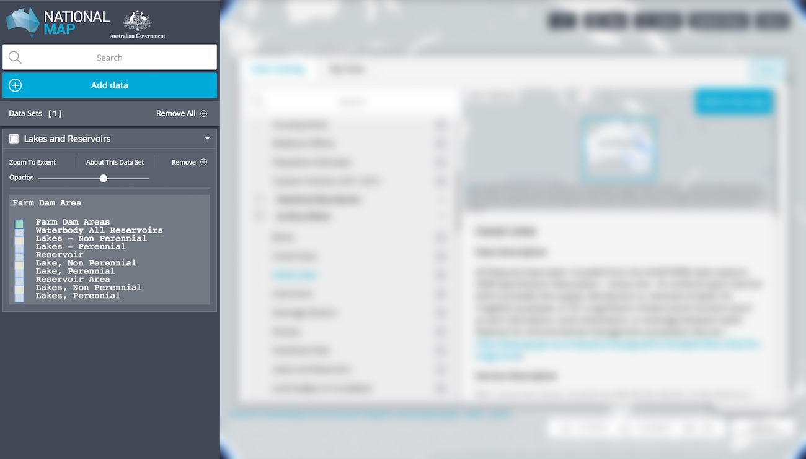

Data Workbench

When a data set is added to the map via the Data Catalogue, a legend for that data set will appear at the top of your Data Workbench (pictured above). From the Data Workbench you can:
- Set the order in which data is shown on the map. To do this, simply click on the title of a data set and drag it to a new position in your Workbench.
- Toggle the visibility of added data sets. To do this, click on the checkbox opposite your prefered data set title.
- Zoom to the geographical extent of an added data set
- Set the opacity of individual data sets
- Remove data sets from the map. Note: removed data sets can always be re-added via the Data Catalogue.